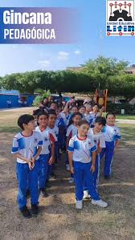
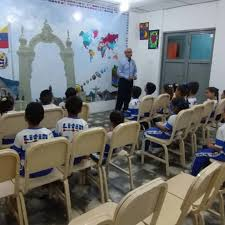

Etapa de alegría y felicidad, recibiendo a los más pequeños y traviesos de la casa para guiarlos con excelencia.
Esta es la etapa de alegría y felicidad, aquí recibimos a los más pequeños y traviesos de la casa. Esta coordinación está conformada por docentes profesionales, capacitados para facilitar el proceso de aprendizaje y que realizan los acompañamientos pedagógicos respectivos, con el fin de lograr el desarrollo excelente de cada proyecto de aula.
Se realizan los respectivos seguimientos académicos, conductuales, emocionales y familiares de los estudiantes, conjuntamente con el departamento de Orientación, para brindarles el apoyo que requieren en medio de las situaciones presentadas, para luego hacer llegar las recomendaciones a las docentes y a los representantes, involucrándolos de forma activa en el proceso de enseñanza-aprendizaje de cada niño y uniéndonos por el bienestar de los estudiantes de 1ero a 6to grado.
Nuestros Valores en Primaria:
Profesionales capacitados para guiar el aprendizaje interactivo y realizar los acompañamientos pedagógicos necesarios en el aula.
Seguimiento integral (académico, conductual, emocional y familiar) brindando apoyo oportuno ante cualquier situación.
Involucramos activamente a los docentes y representantes pedagógicos en el proceso de enseñanza, uniéndonos por el bienestar del alumno.
Atendemos a los jóvenes de 1er a 5to año de Bachillerato, enfocándonos en la motivación al logro y el sentido de pertenencia.
Trayectoria Docente
Nivel Bachillerato
Sinergia Escolar
En esta etapa atendemos a los adolescentes que cursan de 1er a 5to año de Bachillerato. Las coordinaciones de Educación Media General tienen como finalidad la observación, control, desarrollo y acompañamiento al talento humano, estimulando la valoración, promoción y evaluación de procesos continuos que promuevan la motivación al logro.
Coordinamos, asesoramos y supervisamos el desempeño académico de los alumnos y docentes, en el cumplimiento de las normativas dentro y fuera del aula de clases. Consideramos la importancia del docente como figura neurálgica en el proceso educativo y el desarrollo pedagógico del mismo, acompañando cada una de las actividades planificadas.
Valores Pilares en Media General:
Las pre-inscripciones para el próximo período académico se encuentran abiertas para Primaria y Bachillerato General. Da el primer paso hacia una educación integral de vanguardia.